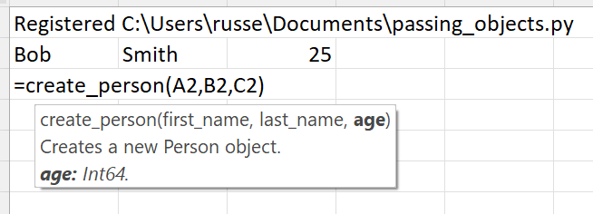
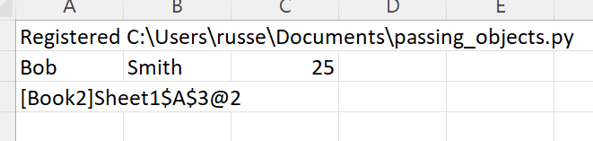
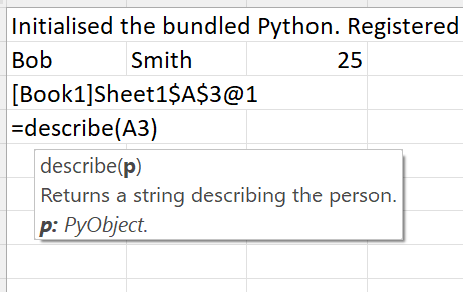
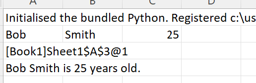
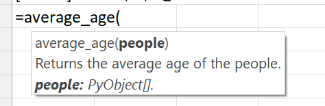
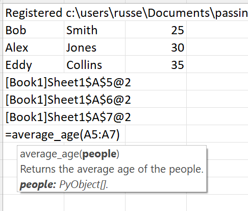
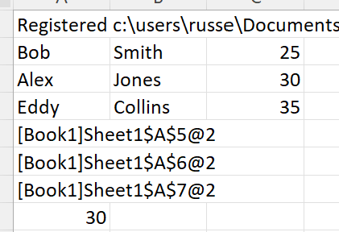

Passing Python objects¶
xlSlim fully supports Python objects. Python objects returned by Python functions are automatically cached by xlSlim and a cache handle is returned to Excel. These cache handles can be supplied to any function that expects an instance of the cached object.
Note
Type hints are essential for xlSlim to determine how to handle Python objects passed between your functions.
This Python module defines the Person class. The create_person() function creates new instances of the Person class. The describe() function accepts a Person object and returns a description of the person. Finally, the average_age() function accepts a list of people and returns their average age. As usual the code has no changes to support xlSlim.
from typing import List
class Person:
def __init__(self, first_name, last_name, age):
self.first_name = first_name
self.last_name = last_name
self.age = age
def create_person(first_name: str, last_name: str, age: int) -> Person:
"""Creates a new Person object."""
return Person(first_name, last_name, age)
def describe(p: Person) -> str:
"""Returns a string describing the person."""
return f"{p.first_name} {p.last_name} is {p.age} years old."
def average_age(people: List[Person]) -> float:
"""Returns the average age of the people."""
return sum((getattr(p, "age") for p in people)) / len(people)
Note
All the Python code and Excel files shown are available from github in the xlslim-code-samples repo. I highly recommend downloading the samples from github. The Excel workbooks contain many tips and tricks.
Save the Python code as a new file on your PC. I saved the file in my Documents folder.
Open Excel and enter this RegisterPyModule() formula (amending the location to match where you saved the file):
=RegisterPyModule("C:\Users\russe\Documents\passing_objects.py")
Let’s create a new person, Bob.
{kind=link}
The Python function created a new Person object, however a string “[Book2]Sheet1$A$3@2” was passed back to Excel.
{kind=link}
What is going on?
xlSlim put the Person object created by create_person() into a memory cache and returned a handle to the cached item. FYI, the number after the @ increments every time the object is updated. If you repeatedly call the Excel function (use F2 on the cell or Ctrl-Alt-F9 to recalc the workbook) you will see the number increasing. This allows you to create dependencies between cells using standard Excel dependency trees.
The cache handle can be used as an input to any function that expects a Person object. Let’s call the describe() function.
{kind=link}
Internally xlSlim fetches the Person object from the memory cache and passes the object to the Python describe() function.
{kind=link}
The function returns a string describing the person. xlSlim hid all the technical details around object caching and no Python code changes were needed.
Passing lists of Python objects¶
Our Python module contains this average_age() function that expects a list of Person objects
def average_age(people: List[Person]) -> float:
"""Returns the average age of the people."""
return sum((getattr(p, "age") for p in people)) / len(people)
xlSlim recognises the type hint “List[Person]” and creates an Excel function that takes in a range of cache handles.
{kind=link}
Let’s create more people and calculate their average age.
{kind=link}
The average age is 30 as expected.
{kind=link}
Viewing Python objects¶
The xlSlim function ViewPyObject() can be used to view any Python object stored in the memory cache.
=ViewPyObject(A5)
{kind=link}
Note
The ViewPyObject() function can be used to view any object xlSlim has cached.
Clearing cached Python objects¶
You may need to clear cached Python objects if your Excel spreadsheet is open for a long time or creates a large number of cached objects.
The xlSlim utility function ClearCaches() will clear all cached objects.
=ClearCaches()